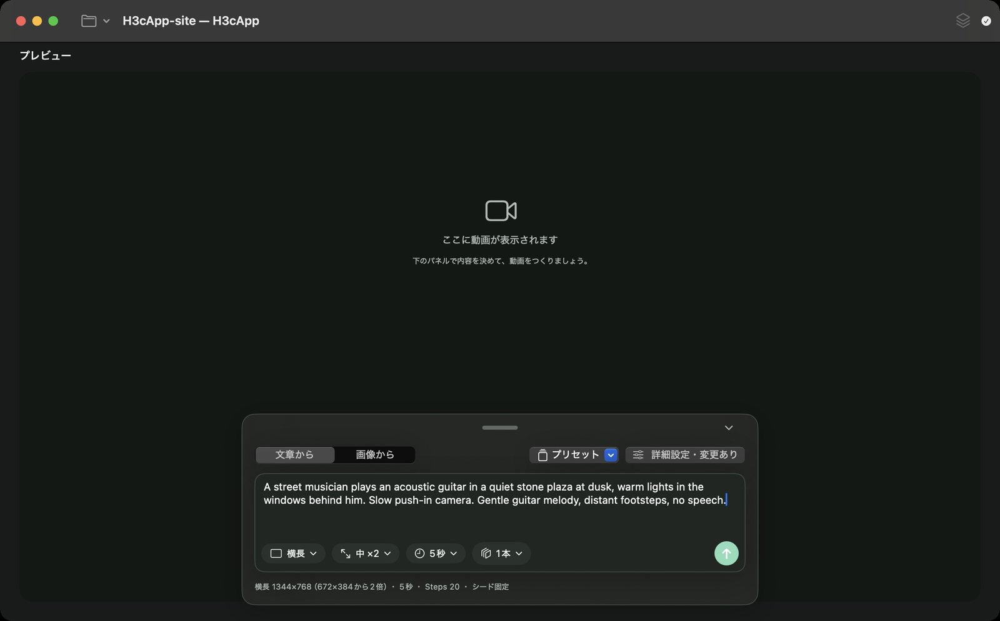

はじめ方
アプリのインストール、AIモデルの準備、最初の動画づくりまでを順に案内します。ターミナルは使いません。
1. アプリをインストールする
- Macの条件を確認します。Appleメニューの「このMacについて」で、チップが「Apple M…」であること、macOSが15（Sequoia）以降であることを確かめます。Intel Mac、macOS 14以前では使えません。
-
DMGをダウンロードします。最新版のリリースページを開き、Assetsにある
H3cApp-0.4.4.dmg（約18.9MB。版によって数字が変わります）をクリックします。「Source code」と書かれたファイルは開発者向けで、インストールには使いません。 - DMGを開きます。ダウンロードしたDMGファイルをダブルクリックすると、H3cAppのアイコンが入ったウィンドウが開きます。
- アプリケーションフォルダへコピーします。H3cAppのアイコンを「Applications」（アプリケーション）へドラッグします。以前の版が入っている場合は置き換えます。
- アプリを起動します。アプリケーションフォルダのH3cAppをダブルクリックします。H3cAppはAppleの公証を受けて配布しています。起動時に警告が出た場合は、困ったときを確認してください。
ここまでで「アプリのインストール」は完了です。ただし、まだ動画はつくれません。次にAIモデルを準備します。
2. AIモデルを準備する
H3cAppは、MiniMaxが公開しているMiniMax-H3という動画生成モデルを使います。モデルはアプリに含まれていないため、最初に一度だけダウンロードします。
容量と時間に余裕のあるときに始めてください。文章から・最初/最後の画像からの生成に使う「FL2VA」だけで約144.1GB（アプリの表示では約134.2GB）あります。回線の速さによっては数時間以上かかります。
モデルが登録されていない状態でH3cAppを起動すると、「MiniMax-H3 モデルのダウンロード」という画面が開きます。
ダウンロードする場合
-
保存先を選びます。「保存先」には最初、内蔵ディスクの
~/Library/Application Support/h3c-app/MiniMax-H3が入っています。別のディスクに置く場合は「変更…」でフォルダを選びます（選んだフォルダの中に MiniMax-H3 フォルダが作られます）。生成中もモデルを読み込むため、ディスクの速さは生成時間に影響します。外付けディスクが内蔵SSDと同じ速さになるとは限りません。 - 必要なモデルを決めます。最初は「Ref2VA も含める（参照画像・動画機能。おおよそ倍のサイズになります）」をオフのままにしておくのがおすすめです。参照画像・動画・音声を使う機能は、必要になってから追加できます。
- 「サイズを確認…」を押します。Hugging Faceのファイル一覧を確認したあと、「合計 134.2GB（81ファイル）」のように実際の合計が表示されます。保存先の空き容量が足りるか確認してください。
- 「ダウンロード開始」を押します。進み具合、ファイル数、速度が表示されます。途中で「中止」したり通信が切れたりしても、次回は続きから再開します。失敗した場合は「再開」を押します。
- 「ダウンロードが完了しました。」と出たら「完了」を押します。モデルが登録され、読み込みが始まります。
すでにモデルを持っている場合
FL2VA（と、あればRef2VA）フォルダを含むMiniMax-H3のフォルダがすでにある場合は、ダウンロード画面の「フォルダを追加…」でそのフォルダを選ぶと、ダウンロードせずに登録できます。
あとで準備する・追加する場合
ダウンロード画面は「あとで」で閉じられます。あとからダウンロードするときは、ウィンドウ右上の「モデル管理」（積み重なった四角のアイコン）から「ダウンロードして追加…」を使います。
参照画像・動画・音声を使うためにRef2VAを追加するときも同じ画面を使います。保存先が今のモデルと同じ MiniMax-H3 フォルダになるようにし（初めに既定の保存先のままダウンロードした場合は変更不要。別の場所なら「変更…」で MiniMax-H3 フォルダの1つ上のフォルダを選びます）、「Ref2VA も含める」をオンにしてダウンロードします。すでにあるFL2VAのファイルは飛ばされ、Ref2VAだけが取得されます。完了するとモデル一覧に同じフォルダの項目がもう1つ増えます。int8キャッシュは項目ごとに作られるので、元の項目を選んだまま使うとキャッシュを作り直さずに済みます。
準備ができたかの確認
ウィンドウ右上の状態アイコンで判断します。
| アイコン | 表示 | 状態 |
|---|---|---|
| 砂時計 | モデルを準備しています | 読み込み中。しばらく待ちます。 |
| チェックマーク | 準備完了 | 生成できます。 |
| 三角の警告 | モデルが見つかりません | モデルが未登録か、フォルダの場所が変わっています。困ったときへ。 |
アイコンをクリックすると、使用中のモデルや読み込みエラーの内容が表示されます。
3. 計算方式を確認する
計算方式は、モデルをどう読み込んで計算するかの設定です。パネル右上の「詳細設定」（または ⌘,）を開き、「計算方式」で確認します。最初はアプリが選んだ方式のままで構いません。
| あなたのMac | 選ぶ方式 | すること |
|---|---|---|
| M5クラスのGPU | 高速（int8キャッシュ） 最初から選ばれています |
初回だけ「キャッシュを作成…」でキャッシュを作ります（約19.3GB、内蔵ディスクの ~/Library/Application Support/h3c-app/cache に保存）。作成前に生成しようとすると「int8キャッシュが見つかりません」と表示されます。 |
| M5以外のApple Silicon | 省メモリ（SSDストリーミング） 最初から選ばれています |
そのまま使えます。キャッシュは不要です。メモリは少なくて済みますが、時間はかかります。 |
| メモリに大きな余裕があるMac | 常駐（大容量メモリ向け、キャッシュ不要） | モデル全体をメモリに展開します。物理メモリがM5クラスで32GB未満、それ以外で64GB未満のときは、アプリが注意を表示します。メモリが少ないMac向けの方式ではありません。 |
参照画像・動画・音声の機能（Ref2VA）を「高速（int8キャッシュ）」で使う場合は、Ref2VA用のキャッシュも別に作ります（さらに約19.3GB）。速度設定や「高速モード（試験的）」との違いは使い方の速度の設定で説明しています。
状態アイコンが「準備完了」で、計算方式の準備（M5クラスならキャッシュ作成）が済んだら「最初の生成準備」は完了です。
4. 最初の動画をつくって保存する
まずは小さなサイズ・5秒で1本つくり、動くことを確かめます。

- 状態アイコンが「準備完了」になっていることを確認します。
- パネル左上の「文章から」「画像から」の切り替えで「文章から」を選びます（最初から選ばれています）。
-
下のプロンプト例をコピーして、プロンプト欄に貼り付けます。
文字を選択して ⌘C でもコピーできます。
これは入力の一例で、同じ映像や音になることは保証しません。英語での例です。日本語のプロンプトでの仕上がりは確認していません。
- プロンプト欄の下で、「画面の形」を「正方形」、「大きさ」を「小（256×256）」、「長さ」を「5 秒」、本数を「1 本」にします。最初は大きさが「中（512×512）」になっているので、「小」に変えてください。
- パネル右上の「詳細設定」は変えずにそのままにします。
- 右下の上向き矢印（↑）のボタンを押すか、プロンプト欄で Enter を押すと生成が始まります（改行は Shift+Enter）。
- 生成中はプレビューに進み具合、経過時間、「残り約…（完了予定…）」が表示されます。最初は「残り時間を見積り中…」と出ます。作者のM5・24GBでは、この設定で1分44秒でした。
- できあがるとプレビューに動画が表示されます。再生ボタン（▶）で再生し、音も確認します。
-
保存します。次のどちらかを選びます。
- 「動画を書き出す…」（⌘S）：MP4ファイルとして好きな場所に保存します。最初はダウンロードフォルダが選ばれています。
- 左上のプロジェクトメニュー（フォルダのアイコン）の「プロジェクトとして保存…」：名前を付けると、今のプロンプトと設定、この動画が
~/Movies/H3cApp/<名前>にまとめて保存されます。
プロジェクトを開いていないときの動画は一時ファイルです。書き出すかプロジェクトとして保存しないと、次に生成したときに消えます。
おつかれさまでした。次は大きさを「中」にしたり、画像から動画をつくったりしてみましょう。使い方へ進んでください。